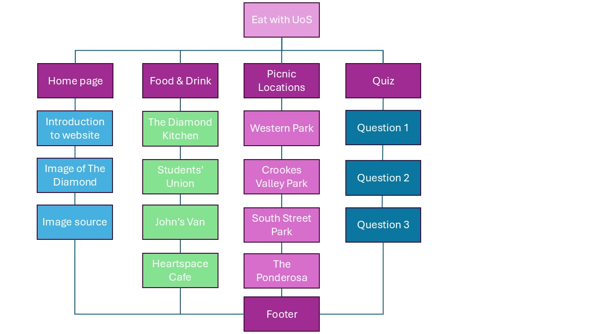
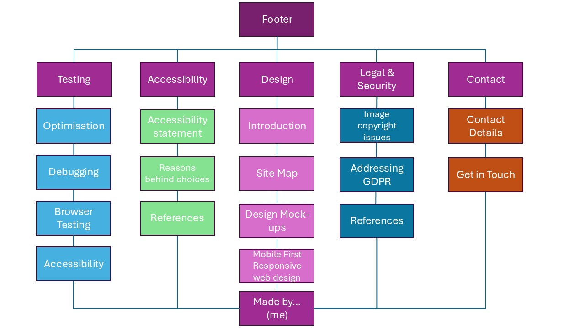

Design
Introduction
The general idea of my website was to have a friendly and welcoming site that gave off a classical cafe vibe. Thus, I went for a brown and yellow colour scheme that could remind the user of hot drinks such as coffee or tea. At the same time, it should have a light hearted tone as I'm touring the customer around my site.
Sitemap
 Justification of Structure
Sticking to the assignment brief, I created this site map for the header hyperlinks and also the footer links to each individual html page. By keeping the subtitles simple but related, I can keep the design consistent while including everything that is required from the assignment.
Breakpoints & Tweakpoints
I decided to use two breakpoints and one tweakpoint for my website: a mobile structure, a desktop structure and a tablet structure. I decided to make the tablet a tweakpoint of the mobile design as I felt that the font & image structuring needed a size inbetween the mobile and desktop.
The difference between the two breakpoints would mostly be the resizing of items such as images and paragraphs (shown in the design mockups below) and also the navigation menu. Since the horizontal listing of the navigation buttons were too long on tablet and mobile, it was made a vertical list for easier viewing.
Design Mock-ups
Keeping in the mobile-first approach, I created design mock-ups for a mobile and desktop page. For the tablet, it would follow the design of the mobile but with larger fonts. I created two designs because I wanted the general formatting to be the same across all pages; keeping to a consistent theme.
In the mobile design, I decided to place the images and paragraphs to be in a column so that the visibility of them is clear to the user in mobile view.
In the desktop view, I decided that when it is at full page, the image would shrink to half of the page and the text would move from under it to beside it on the left. This is so the picture is visible to the user on one page.